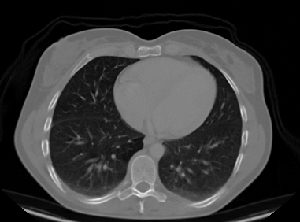
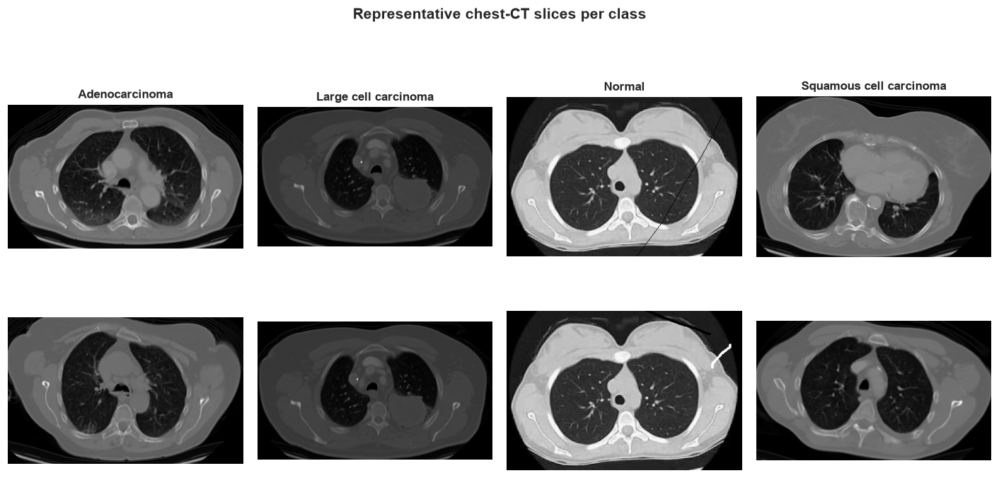
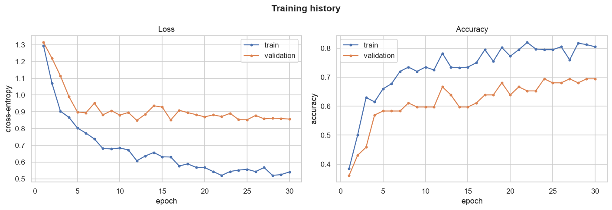
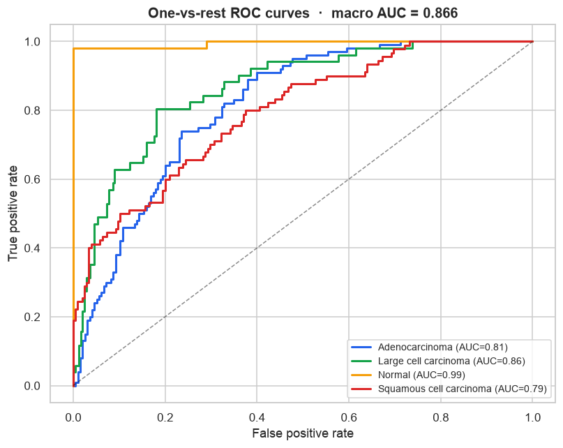
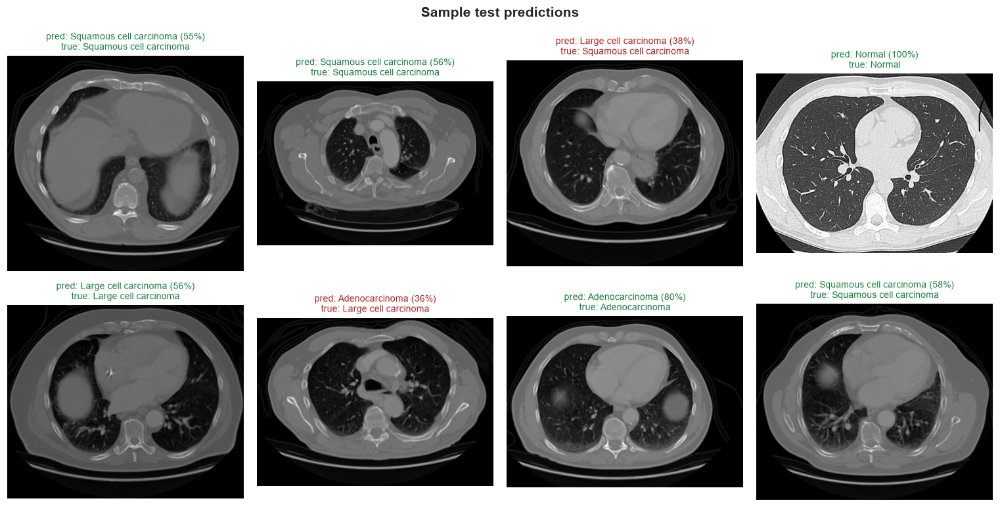
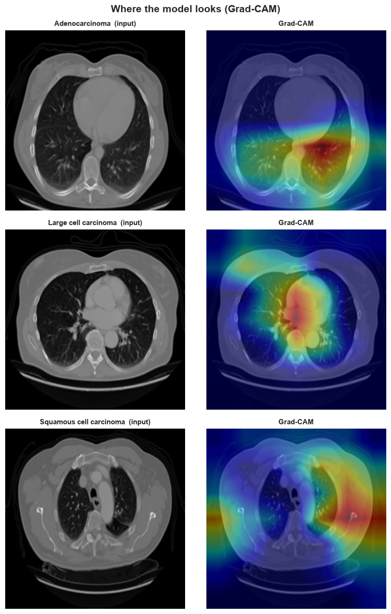

Detecting lung cancer from a CT scan.
A convolutional neural network — trained by transfer learning — that reads a chest-CT slice, separates cancer from healthy tissue, and identifies the tumour subtype. Then it shows you exactly where it looked.
- —
- cancer sensitivity
- —
- specificity
- —
- macro AUC

The data
Real chest-CT slices across four diagnoses. The training set is balanced; the test set is left realistically imbalanced.

dorsar/lung-cancer, MIT-licensed; originally Kaggle mohamedhanyyy).The method
Transfer learning lets a small dataset go a long way — we reuse features a network already learned from millions of images.
- Preprocess
Resize each slice to 224×224, normalise with ImageNet statistics, and augment the training set (flips, rotation, jitter) to resist overfitting.
- Backbone
Take MobileNetV2 pretrained on ImageNet and freeze its convolutional feature extractor.
- New head
Train a fresh dropout + linear classifier for the four CT classes with Adam and cross-entropy.
- Export
Convert to ONNX so the model runs in your browser — verified to match PyTorch to ~1e-5.
The results
The model is near-perfect at the screening question — is there cancer at all? — and more modest at telling the three cancer subtypes apart, which overlap heavily on a single slice.
Confusion matrix
Rows = true class · columns = predicted. The diagonal is correct.
Per-class performance
Precision, recall and F1 for each diagnosis.



Where it looks
A model can be right for the wrong reasons. Grad-CAM overlays the regions of the scan that most drove each prediction — warmer means more influential.

Test the model
Drop in a chest-CT slice — or pick a sample. Everything runs locally in your browser via ONNX Runtime Web. No upload, no server.
Drop a CT image
or click to browse
Loading model…
Softmax outputs. Browser preprocessing approximates the training pipeline, so values are close — not bit-identical — to the notebook.
Results appear here once you analyse a scan.
The authors
Azizbek Oqbutayev

Project author — model & research

Nozima Sotiboldiyeva
Project author — model & research